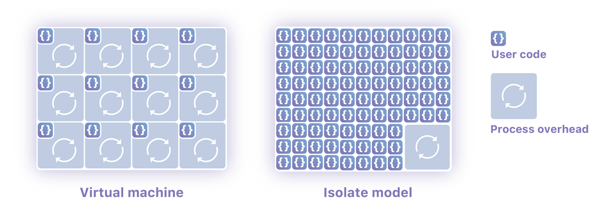
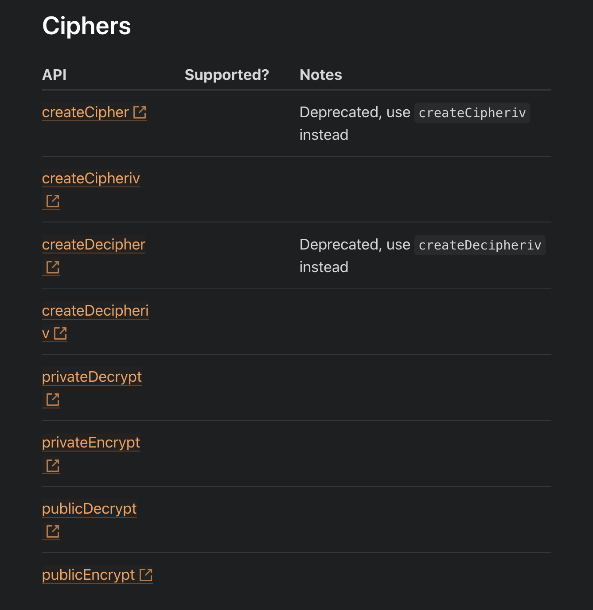

Thoughts learnings while i was messing with serverless, despite i knew the hype, but i still wanted to get my hands burnt!
what do we even mean by serverless in first place ? there is no server ? then where does our code runs ????
so let’s try to understand where the problem lies which serverless computing is trying to solve,
imagine you are using normal server for serving your users, they normally use in day time, everything is going good, you are paying for rented server through xy service, and servers are running 24/7, but user don’t use your software 24/7, they are also human, they also sleep, they also do other things, so we are paying for server rent when we are not using also!
here comes the serverless in the picture, we only pay for what we use, so when someone sends request to our backend server, it will wake up, process the request, and then go offline, and we only pay for what amount of time we used!
okay but math is not mathing, when we call request our backend in serverless, it will take some time to wake up and in net net res time will increase right ?
cold start problem:
yes!, this problem is called cold start problem in world of serverless computing, what you think aws knows something black magic or other serverless providers, cold start problem occurs when it is first time someone is invoking(fancy word for calling or making request) your serverless function, service which you are using will spin up new container to execute the code, and spinning up new container will take some time, which we called as cold start time, but once container is up, if any new request comes then there will be no cold start time!
only one company has solved cold start problem, which is cloudflare, they have taken different approach for running serverless functions, most serverless computing providers runs serverless code in new containers, but cloudflare handles this differently:
aws lambda runs nodejs where as cloudflare workers runs v8 engine
Cloudflare Workers runtime uses the Chrome V8 Engine to run Javascript code. Each process is sandboxed using “isolates” so that the different users’ codes are run in a single process in an isolated and secure way. This reduces the overhead of processes.
interested more in isolates ? → HN
 so let’s get back to serverless!
another big thing which all serverless providers says it, your code will run on the edge, or in better way of saying, your code will run near your user as much as possible, so response time get as low as possible, and request is served fastam fast!!!!!
because we are paying for what we use, serverless seems cheap!
btw, this if you are in js ecosystem or frontend, you would have used next js or heard about it for sure, and you also know about vercel,
ever wondered why it is very hard to host your nodejs backend api for free, heroku was there in the backdays, but compare to frontend, they are free, nextjs is full stack framework, so you can write backend api in one managed codebase, no need to go to two different things, then question arises how vercel and other people are providing free hosting for nextjs, where my frontend and api both are getting taken care where as other platform are asking for money,
nextjs under the hood, converts all the api routes/functions into lambda function(serverless function) and it deploys them to aws lambda, so we can call it wrapper in one way!
we don’t need to worry about scaling, serverless functions will scale automatically.
it’s rant time:
things i don’t like or hate about this hyped(currently very hyped) serverless world:
- half of things don’t work on serverless, i need to find lot of workaround even can’t use some good library because they don’t run on serverless, cloudflare has some good support for nodejs library, but yesterday was implementing encryption and decryption in one of my apis and they don’t even support cipher, i wanted to use orchid orm but it doesn’t work in serverless, it’s all about trade offs
- 
- logging is very big pain in this serverless world, talking specific about cloudflare, it don’t gives direct logging, you can open socket connection to view live logs, but no way of storing them managing it, i wrote simple function to store my errors in discord for free, vercel is nice in this case for nextjs, it stores logs for me, thankyou vercel
- edge computing and serverless is double edge sword, if you don’t know what your doing and how actually distributed thing is working, for example if you are using serverless which is on the so called edge to get close to user for less latency but your database is in one place, and it’s not optimised to handle current architecture, then backend to database round trip will cost more, and edge in net will take more time to complete the operation, good explanation in this video
- it’s stateless, you can’t do those fs workaround or memory storing hacky things in serverless, you need to store your state if you care about in some database or somewhere other
-
-
APIs are platform specific. Examples:
-
The serverless functions you wrote for AWS Lambda cannot just be run on Cloudflare Workers, since Workers doesn’t use NodeJS.
-
This is extremely annoying when you find a bug and you want to switch to another service provider, but your code or your dependencies do not support another provider.
-
This also means you have to learn how the service works.
-
even machine learning people are nowdays agnostic, be like them (onnx)
-
- hard limitation on cpu usage timing even i want to pay
- if you are hitting scale then serverless can make you go bankrupt, it’s make more sense to go for dedicated machine if you are at scale(context is king, and also answer is it depends)
- in the end you trade old problems with new problems nothing new, it’s just suffering with extra steps
one thing which i like if i have some small hobby project, which is not that too complex and simple, hosting it’s backend to rented vm still cost some money, where this all serverless function providing services offer very very good free generous tier, which totally make sense to use, but for big production app/service, need to be aware about which trade offs you are willing to take and how that will work in the future
tbh, answer to any fucking question is it depends!
here aws itself who is famous for aws lambda, amazon prime itself rewrote it’e microservice architecture to monolith, they publish article on this how they saved 90 % cost
article person : https://www.primevideotech.com/video-streaming/scaling-up-the-prime-video-audio-video-monitoring-service-and-reducing-costs-by-90
video person : https://youtu.be/qQk94CjRvIs?si=6Dvg0SfZ3jCTxqKK
and i am still trying to wrap my mind around how serverless database works, i know instant replicas hack, so read will me much more faster and distributsed but write will be expensive, but all this new startups and their claims still don’t make sense, maybe skill issue or they are just jargons wraped in some old thing, will write when i explore database, at current stage i am crying and learning about how to architect database schema, so i don’t need to sleepless nights to fix data inconsistency issues!